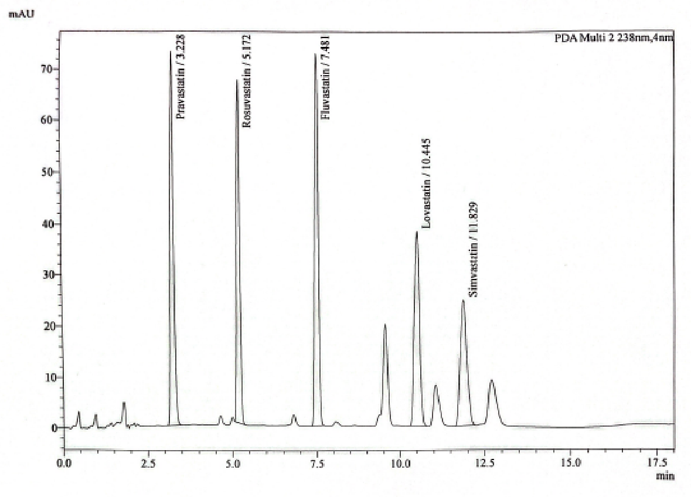
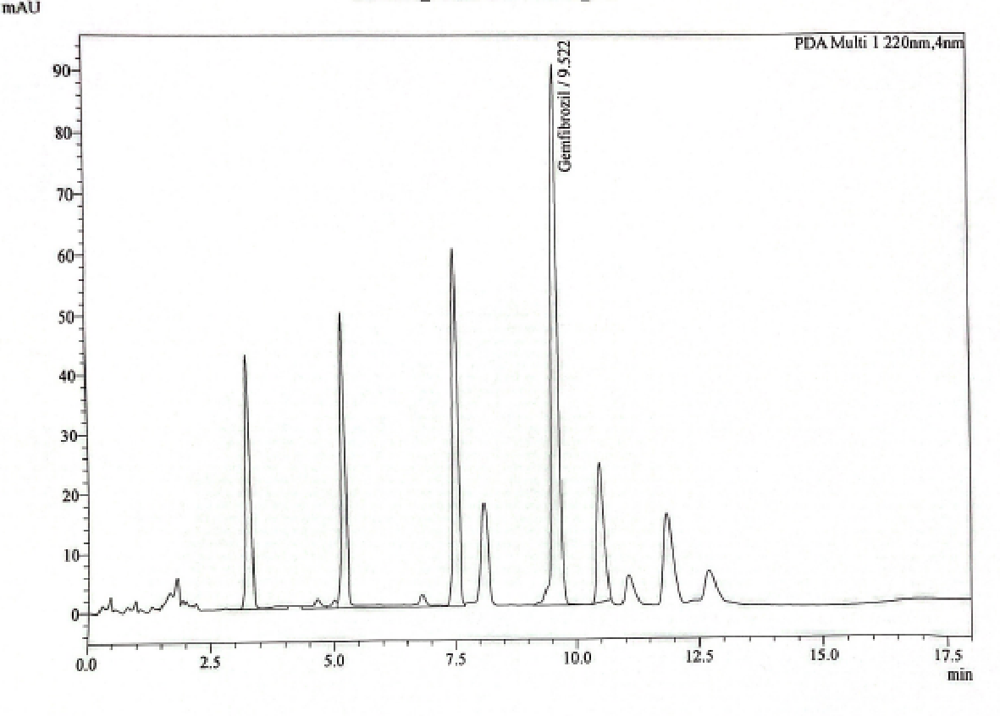
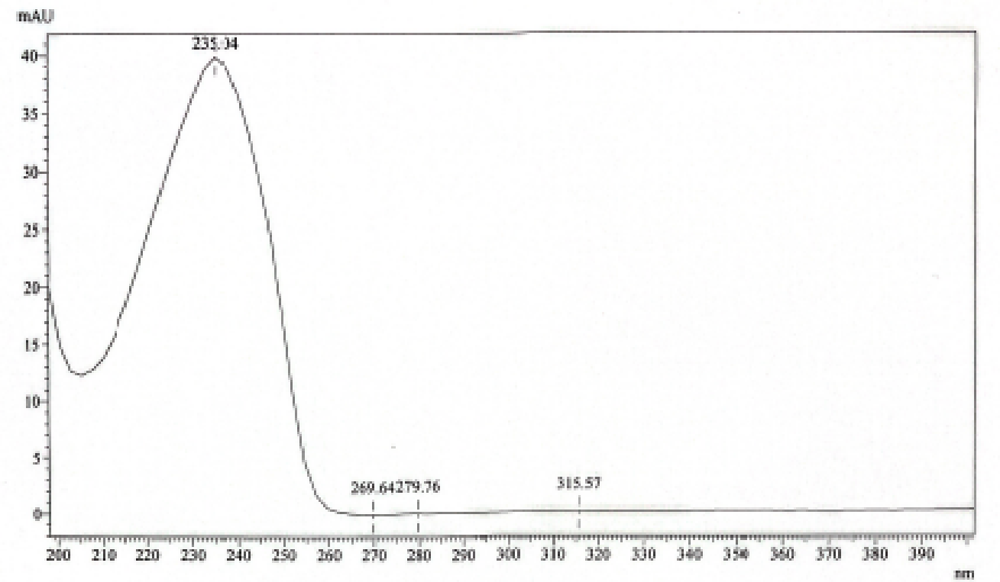
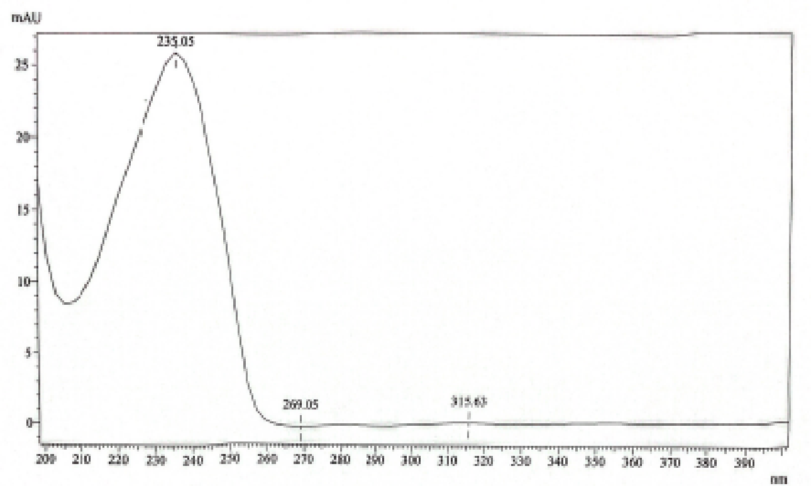
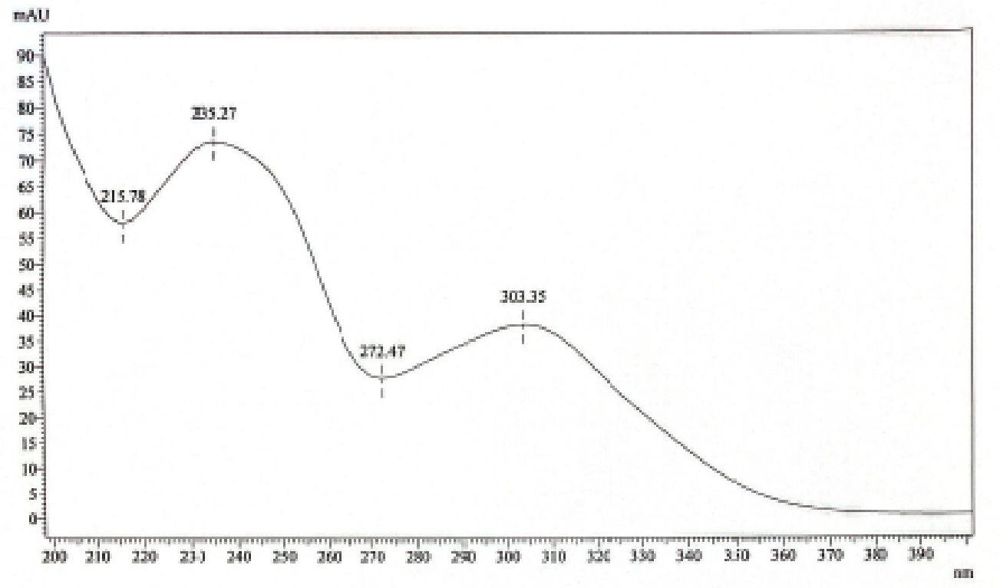
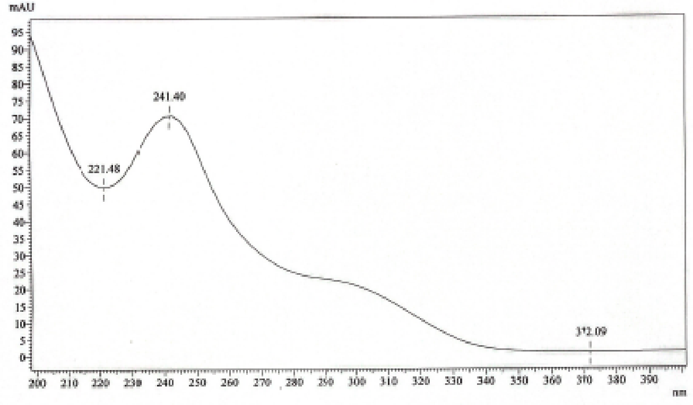
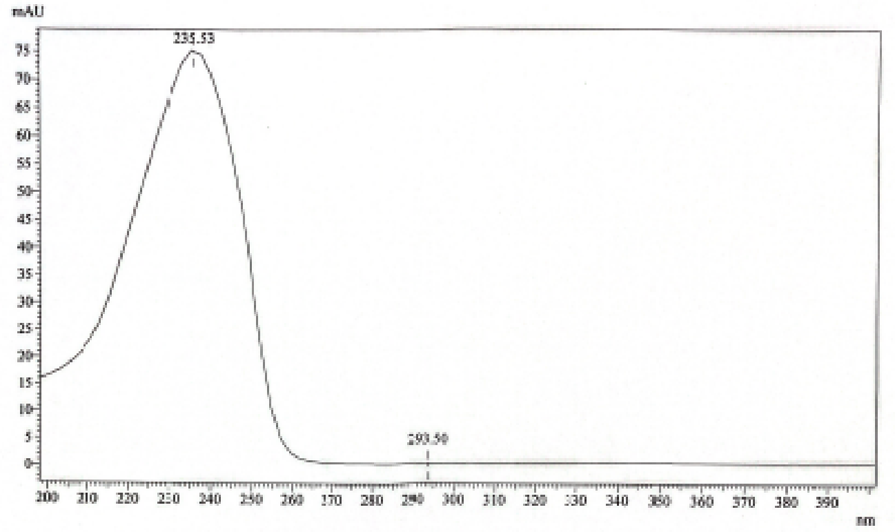
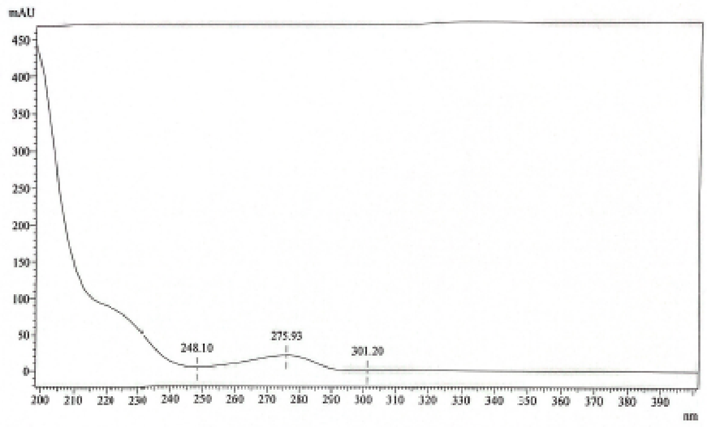

PKKK/300/UP/028 Identifikasi Antikolesterol dalam Produk Tradisional menggunakan HPLC
- Tapis larutan buffer dan asetonitril menggunakan penuras membran nilon 0.45 µm dan degas dalam kukus ultrasonik sekurang-kurangnya 20 minit.
- Pastikan autosampler disetkan pada suhu 5 °C dan suhu turus pada 40 °C untuk kestabilan masa penahanan.
- LOD solution (8 µL) wajib disuntik sebelum sampel pertama, selepas setiap 5 sampel, dan pada akhir turutan suntikan.
- Bagi pengesahan positif, perbezaan masa penahanan piawai vs sampel mestilah dalam had spesifikasi (±2%) dan padanan spektrum UV (spectral match factor) mestilah > 0.999. Ujian pengesahan semula wajib dibuat oleh penganalisis kedua pada tarikh berasingan.
|
NPRA PUSAT KAWALAN KUALITI |
ARAHAN KERJA: IDENTIFIKASI ANTIKOLESTEROL DALAM PRODUK TRADISIONAL MENGGUNAKAN HPLC | |
| No. Dokumen: PKKK/300/UP/028 | Terbitan / Semakan: Terbitan 2 Semakan 0 | |
| Tarikh Kuatkuasa: 10 April 2026 | Bahagian / Unit: SPPK · Unit Penyaringan | |
0.0 SEJARAH PINDAAN & SEMAKAN
| Terbitan | Semakan | Ditulis Oleh | Disemak Oleh | Diluluskan Oleh | Tarikh Kuatkuasa |
|---|---|---|---|---|---|
| 1 | 0 | Nurul ‘Izzah Hany Ismail | Ooi Suat Hong | Ida Syazrina Ibrahim | 15 Nov 2024 |
| 1 | 1 | Nurul ‘Izzah Hany Ismail | Ooi Suat Hong | Ida Syazrina Ibrahim | 1 Julai 2025 |
| 2 | 0 | Nurul ‘Izzah Hany Ismail | Nurul Nadiah Noh | Ida Syazrina Ibrahim | 10 April 2026 |
Perincian Pindaan & Catatan Log Sejarah Dokumen ▸
Pindaan nombor dokumen daripada PKKK/300/UAT/054 kepada PKKK/300/UP/028.
Pindaan nombor rujukan dalam ruangan Rujukan: PKKK/300/UAT/004 ➔ PKKK/300/UP/003, PKKK/300/UAT/012 ➔ PKKK/300/UP/011, PKKK/300/UAT/017 ➔ PKKK/300/UP/016, PKKK/300/UAT/001 ➔ PKKK/300/UP/001.
Mengemaskini perenggan 7 Rekod Kualiti dengan menambah Borang Persampelan (UP/001A) dan Laporan Pengujian HPLC (UP/005).
Kemaskini 6.6 System suitability test requirement: Kriteria Theoretical plate dikemaskini daripada "(NLT) 1500" kepada "(NLT) 2000".
Menambah kriteria "%RSD for retention time: Not more than, NMT 2.0%".
Menambah perenggan 6.5.5 Internal Quality Control (IQC).
Mengemaskini perenggan 5.4 bagi jawatan Penolong Pegawai Farmasi (U7 / U6).
Mengemaskini perenggan 3 Definisi, menambah perenggan 6.3.4 Single Standard Stock Solution, dan mengemaskini perenggan 6.5.6 Acceptance criteria for test sample serta perenggan 6.5.3 Injection Sequence & IQC Table.
1.0 TUJUAN
Untuk memastikan ujian identifikasi anti-kolesterol dalam produk tradisional menggunakan alat Kromatografi Cecair Prestasi Tinggi (High Performance Liquid Chromatography - HPLC) dilaksanakan dengan cekap, tepat, dan berkesan mematuhi piawaian ISO/IEC 17025.
2.0 SKOP
Prosedur ini hendaklah digunakan oleh kakitangan Unit Penyaringan untuk menjalankan ujian identifikasi adulteran sintetik anti-kolesterol (merangkumi Pravastatin, Rosuvastatin, Fluvastatin, Gemfibrozil, Lovastatin, dan Simvastatin) dalam produk tradisional pelbagai bentuk dos menggunakan sistem HPLC dengan pengesan Photo Diode Array (PDA).
3.0 DEFINISI
4.0 CARTA ALIRAN
Tiada carta aliran formal berasingan untuk prosedur ini. Ringkasan visual alur kerja makmal dipaparkan pada bahagian atas arahan kerja ini (Visual Workflow Timeline: Penyediaan Reagen ➔ Pengekstrakan ➔ Persediaan Alat ➔ Suntikan Batch ➔ Verifikasi & Rekod).
5.0 TANGGUNGJAWAB
6.0 PROSEDUR KERJA MAKMAL
- ▹ HPLC System: Dilengkapi pengesan Photodiode Array (PDA/DAD).
- ▹ Turus (Column): Zorbax Eclipse XDB-C18 5 µm (150 × 4.6 mm) atau yang setara.
- ▹ Neraca analitikal & mikro (Analytical balance & microbalance).
- ▹ Kukus ultrasonik (Ultrasonic bath) & Alat emparan (Centrifuge).
- ▹ Phosphoric Acid: Gred HPLC.
- ▹ Methanol: Gred HPLC.
- ▹ Acetonitrile: Gred HPLC.
- ▹ Air Nyahion (Deionized Water): Rintangan 18.2 MΩ.cm.
- ▹ Pravastatin Standard
- ▹ Rosuvastatin Standard
- ▹ Fluvastatin Standard
- ▹ Gemfibrozil Standard
- ▹ Lovastatin Standard
- ▹ Simvastatin Standard
- ▹ Tiub emparan plastik / kaca (Centrifuge tube).
- ▹ Sistem penuras pelarut vakum (Solvent filter system).
- ▹ Penuras membran nilon pelarut 0.45 µm.
- ▹ Botol pelarut kaca (1 L).
- ▹ Kelalang volumetrik Gred A (100 mL, Grade A).
- ▹ Penuras picagari nilon 0.45 µm (Nylon syringe filter).
- ▹ Picagari pakai buang tanpa jarum (5 mL).
- ▹ Vial kaca skru penutup ambar (2 mL amber vial).
1. Larutkan 1.0 mL asid fosforik (Phosphoric acid) ke dalam 1000 mL air nyahion (Deionized water) dalam botol pelarut.
2. Sukat 1 L asetonitril (Acetonitrile) dan pindahkan ke dalam botol pelarut berasingan.
3. Tapis larutan buffer dan asetonitril menggunakan penuras membran nilon 0.45 µm dan sistem penuras pelarut.
4. Nyahgas (degas) fasa bergerak yang telah ditapis dalam kukus ultrasonik sekurang-kurangnya selama 20 minit bagi memastikan tiada sebarang gelembung gas terlarut.
Timbang tepat 20 mg piawai rujukan Pravastatin, Rosuvastatin, Fluvastatin, Gemfibrozil, Lovastatin dan Simvastatin ke dalam kelalang volumetrik 100 mL secara berasingan.
Larutkan dan cukupkan isipadu sehingga tanda senggatan dengan Metanol. Kepekatan akhir bagi setiap larutan stok piawai individu ialah 0.2 mg/mL (200 ppm).
Sediakan campuran larutan piawai kerja dengan kepekatan 0.05 mg/mL (50 ppm) Gemfibrozil dan 0.02 mg/mL (20 ppm) bagi piawai rujukan yang lain.
Tatacara Pencampuran: Masukkan 0.25 mL stok Gemfibrozil, 0.1 mL bagi setiap satu stok piawai rujukan lain, dan 0.25 mL Metanol ke dalam satu vial kaca ambar, kemudian gaul sehingga sebati.
Sediakan larutan LOD dengan kepekatan 0.005 mg/mL (5 ppm) Gemfibrozil dan 0.002 mg/mL (2 ppm) bagi piawai yang lain.
Tatacara: Tambahkan 0.1 mL larutan piawai kerja A1 dan 0.9 mL Metanol ke dalam vial kaca ambar, kemudian goncang dan campur sekata.
6.3.4.1 Sediakan larutan stok piawai tunggal mengikut tatacara yang sama seperti dinyatakan dalam 6.3.1 hingga 6.3.3, tetapi menggunakan piawai tunggal berbanding campuran berbilang piawai.
6.3.4.2 Prosedur ini digunapakai untuk tujuan penyaringan sebatian sasaran terpilih sahaja (screening selected compounds only).
6.4.1 Pengendalian Sampel (Sampling): Proses persampelan berbeza mengikut jenis bentuk dos sampel (kapsul, tablet, pil tradisional, serbuk, cecair). Sila rujuk dokumen PKKK/300/UP/001 (Proses Persampelan).
1. Timbang tepat 1 gram sampel (bagi bentuk pepejal / serbuk) atau sukat tepat 10 mL sampel (bagi bentuk cecair) dan pindahkan ke dalam tiub emparan (centrifuge tube).
2. Tambahkan 20 mL Metanol (untuk sampel pepejal) atau 10 mL Metanol (untuk sampel cecair).
3. Sonikasi campuran dalam kukus ultrasonik selama 15 minit pada suhu 37 °C.
4. Empar (centrifuge) larutan pada kelajuan 4000 rpm selama 5 minit.
5. Tapis lapisan supernatan ke dalam vial kaca ambar 2 mL menggunakan penuras picagari nilon 0.45 µm.
Sistem HPLC dan parameter instrumen yang digunakan untuk identifikasi anti-kolesterol adalah seperti yang ditetapkan dalam Jadual 1 di bawah:
| Parameter Kromatografi | Spesifikasi / Kaedah Rasmi |
|---|---|
| Turus (Column) | Zorbax Eclipse XDB-C18 atau yang setara |
| Dimensi Turus | 150 mm × 4.6 mm, saiz zarah 5 µm |
| Kadar Alir (Flow rate) | Rujuk Jadual 2 (0.8 – 1.2 mL/min) |
| Suhu Turus (Column temperature) | 40 °C |
| Pengesan / Panjang Gelombang (PDA) |
220 nm: Gemfibrozil (Rujuk Figure 2) 238 nm: Semua sebatian Statin (Pravastatin, Rosuvastatin, Fluvastatin, Lovastatin, Simvastatin - Rujuk Figure 1) |
| Isipadu Suntikan (Injection volume) | 10 µL (LOD Injection: 8 µL) |
| Masa Analisis (Run time) | 18 minit |
| Suhu Autosampler | 5 °C |
| Kaedah Fasa Bergerak | Program Kecerunan (Gradient Program) |


Program kecerunan pelarut (solvent gradient program) bagi fasa bergerak Buffer Asid Fosforik dan Asetonitril ditunjukkan dalam Jadual 2 di bawah:
| Masa (minit) | Larutan Buffer pH 3.0 (%) | Acetonitrile (%) | Kadar Alir (mL/min) | Profil Elusi |
|---|---|---|---|---|
| 0.01 | 60 | 40 | 0.8 | Kecerunan Awal (Initial gradient) |
| 3.00 | 50 | 50 | 0.8 | Peningkatan organik linear |
| 8.00 | 30 | 70 | 1.2 | Elusi sebatian statin lewat |
| 14.00 | 20 | 80 | 0.8 | Pencucian turus (Column washing) |
| 16.10 | 60 | 40 | 0.8 | Pengkondisian semula (Re-equilibration) |
| 18.00 | 60 | 40 | 0.8 | Tamat turutan (End of run) |
*Rujuk dokumen PKKK/300/UP/003 (RRLC 1200 Series), PKKK/300/UP/011 (HPLC Prominence-i) dan PKKK/300/UP/016 (HPLC Flexar) untuk tatacara persediaan kaedah dan pengoperasian instrumen HPLC.
1. Mula-mula, suntik Blank / Pelarut (Diluent) sebanyak 1 kali.
2. Suntik Campuran Larutan Piawai Kerja A1 sebanyak 6 kali untuk Ujian Kesesuaian Sistem (System Suitability Test - SST).
3. Suntik Larutan LOD (8 µL) sebelum memulakan suntikan sampel ujian.
4. Suntik Blank / Pelarut sebelum setiap suntikan sampel.
5. Setiap sampel disuntik sebanyak 2 kali ulangan (duplicate injection).
6. Sekiranya lebih daripada 5 sampel disuntik dalam satu siri analisis, larutan LOD mestilah disuntik sekali setiap 5 sampel sebagai semakan IQC.
7. Larutan LOD mestilah disuntik pada penghujung siri analisis sebelum batch ditamatkan.
Contoh susunan turutan suntikan bagi batch pengujian ditunjukkan dalam Jadual 3 di bawah:
| No. Turutan | Perincian Suntikan (Vial Content) | Bilangan Suntikan | Tujuan & Catatan |
|---|---|---|---|
| 1 | Blank / Diluent (Methanol) | 1 | Pembersihan garis dasar (Baseline check) |
| 2 | Mix Working Standard Solution A1 | 6 | System Suitability Test (SST, %RSD ≤ 2.0%) |
| 3 | LOD Solution (8 µL) | 1 | Initial IQC Check |
| 4 | Blank / Diluent | 1 | Menghalang carry-over |
| 5 | Sampel No. 1 | 2 | Ujian Sampel (Duplicate) |
| 6 | Blank / Diluent | 1 | Wash / Blank |
| 7 | Sampel No. 2 | 2 | Ujian Sampel (Duplicate) |
| 8 | Blank / Diluent | 1 | Wash / Blank |
| 9 | Sampel No. 3 | 2 | Ujian Sampel (Duplicate) |
| 10 | Blank / Diluent | 1 | Wash / Blank |
| 11 | Sampel No. 4 | 2 | Ujian Sampel (Duplicate) |
| 12 | Blank / Diluent | 1 | Wash / Blank |
| 13 | Sampel No. 5 | 2 | Ujian Sampel (Duplicate) |
| 14 | LOD Solution (8 µL) | 1 | Mid-batch IQC Check (Setiap 5 Sampel) |
| 15 | Blank / Diluent | 1 | Wash / Blank |
| 16 | Sampel No. 6 | 2 | Ujian Sampel (Duplicate) |
| 17 | Blank / Diluent | 1 | Wash / Blank |
| 18 | LOD Solution (8 µL) | 1 | Final IQC Check (Tamat Batch) |
Ujian kesesuaian sistem perlu dijalankan untuk setiap siri analisis kelompok (batch run) menggunakan 6 suntikan replikat campuran larutan piawai kerja A1 (0.05 mg/mL Gemfibrozil dan 0.02 mg/mL piawai yang lain):
6.7.1 Suntik 8 µL larutan LOD selepas setiap 5 sampel & pada penghujung siri analisis.
6.7.2 Kriteria Penerimaan IQC: Peratus perbezaan masa penahanan (% difference of retention time) bagi larutan LOD mestilah tidak melebihi 3% berbanding suntikan piawai awal bagi setiap kelompok 5 sampel.
Bandingkan masa penahanan dan spektrum UV yang diperolehi daripada kromatogram sampel dengan kromatogram larutan piawai kerja. Identiti setiap sebatian anti-kolesterol adalah POSITIF jika memenuhi kesemua kriteria berikut:
Sekiranya sampel didapati POSITIF dengan salah satu sebatian anti-kolesterol, persediaan sampel baharu (new sample preparation & re-analysis) wajib dijalankan oleh penganalisis kedua pada tarikh yang berbeza daripada penganalisis pertama bagi memenuhi keperluan akreditasi ISO/IEC 17025.
Setiap sampel akan mempunyai satu laporan analisis rasmi (Borang UP/005). Laporan mesti merangkumi perincian berikut:
7.0 REKOD KUALITI
| No. Borang / Dokumen | Tajuk Dokumen Rekod Kualiti | Lokasi Simpanan | Tempoh Simpanan |
|---|---|---|---|
| UP/001A | Borang Persampelan (Ujian Penyaringan) | Fail Sampel Unit Penyaringan | 6 Tahun |
| UP/005 | Laporan Pengujian HPLC | Unit Perkhidmatan Analisis (UPA) / Arkib | 6 Tahun |
8.0 LAMPIRAN (OFFICIAL CHROMATOGRAMS & UV SPECTRAL LIBRARY)
Lampiran kromatogram piawai campuran A1 dan profil spektrum UV rasmi bagi kesemua 6 sebatian antikolesterol (julat imbasan 200–400 nm) seperti dalam dokumen rasmi Arahan Kerja:






9.0 RUJUKAN DOKUMEN
| No. Dokumen Rujukan | Tajuk Dokumen | Pautan Pantas |
|---|---|---|
| PKKK/300/UP/003 | Rapid Resolution Liquid Chromatography HP1200 | Buka SOP → |
| PKKK/300/UP/011 | Shimadzu High Performance Liquid Chromatography (Prominence-i) | Buka SOP → |
| PKKK/300/UP/016 | High Performance Liquid Chromatography Flexar (Perkin Elmer) | Buka SOP → |
| PKKK/300/UP/001 | Proses Persampelan (Ujian Penyaringan) | Buka SOP → |